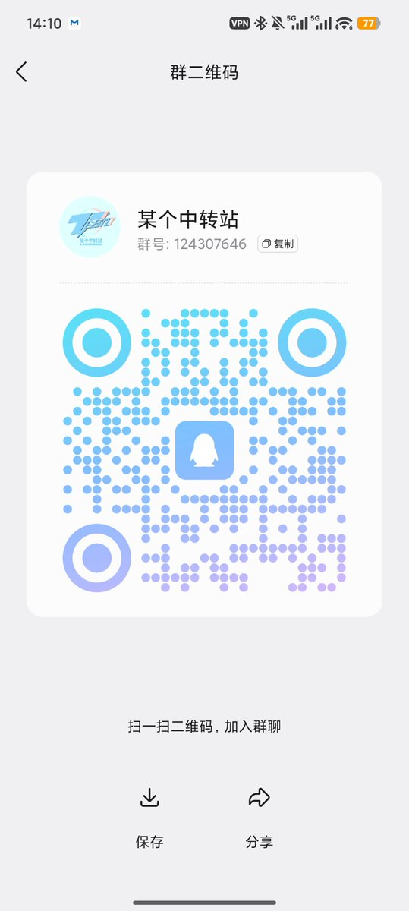
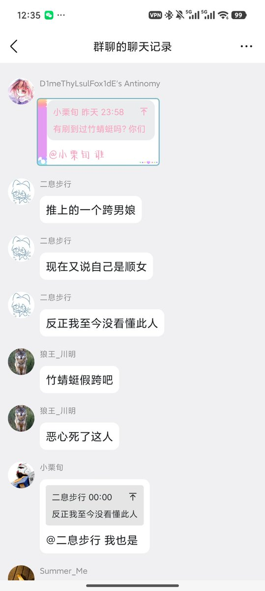
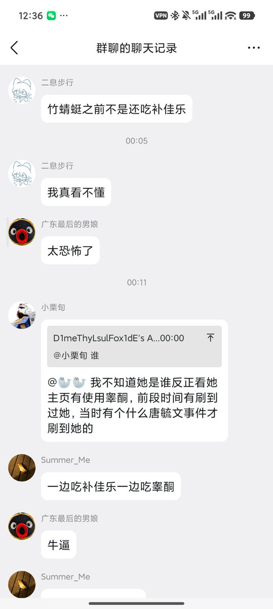
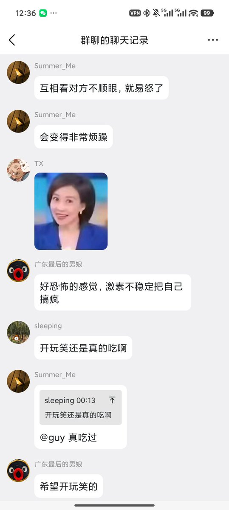
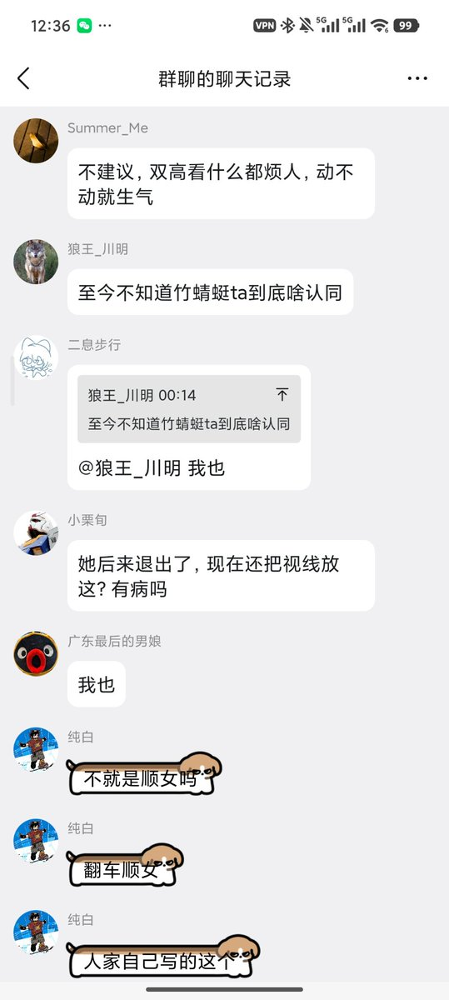

另外几个问题：到底什么群？如图：
现在因为我骂他们的问题，这怂逼群主不让人进了，你们想进的可以加他QQ 2762439617 和她最喜欢的跳脚顺直男3773303759 为什么跨男群有顺男我也不知道捏🤏

现在因为我骂他们的问题，这怂逼群主不让人进了，你们想进的可以加他QQ 2762439617 和她最喜欢的跳脚顺直男3773303759 为什么跨男群有顺男我也不知道捏🤏





关于几个问题：我为什么要一直追着那个跨男群骂？
因为他群里的人一直在骂我。
我吃雌二醇到底真的假的？
是真的，只不过当时距离我上一次睾酮已经超过100天，然后我又好奇雌二醇到底是什么味道就买了一盒，不过只吃了两颗，拍照只是为了炒作，不存在「双高激素不稳定看谁都易怒」 https://t.co/8KJRVjSYMV
因为他群里的人一直在骂我。
我吃雌二醇到底真的假的？
是真的，只不过当时距离我上一次睾酮已经超过100天，然后我又好奇雌二醇到底是什么味道就买了一盒，不过只吃了两颗，拍照只是为了炒作，不存在「双高激素不稳定看谁都易怒」 https://t.co/8KJRVjSYMV